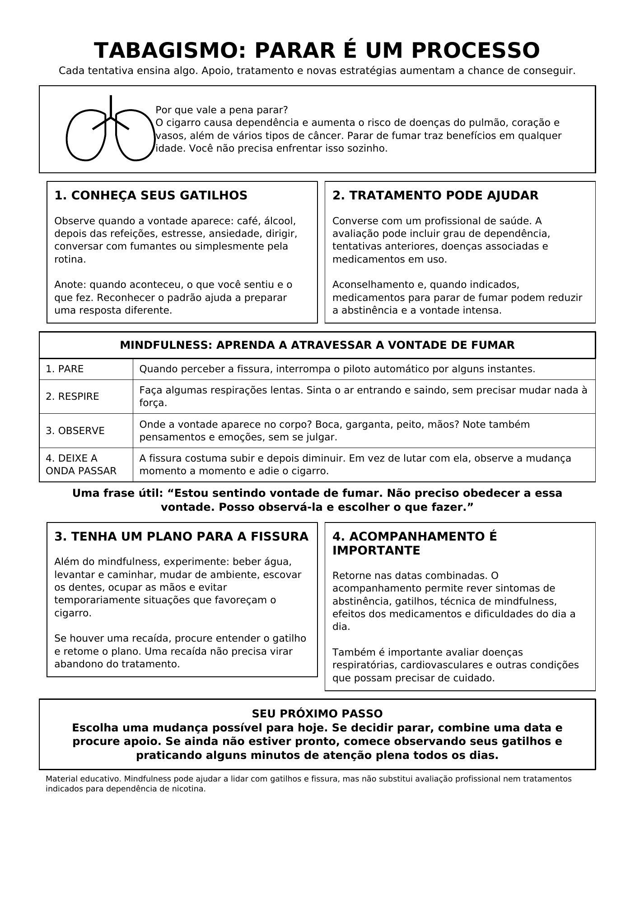

Tabagismo: parar é um processo

Ler o texto do infográfico
Cada tentativa ensina algo. Apoio, tratamento e novas estratégias aumentam a chance de conseguir.
Por que vale a pena parar?
O cigarro causa dependência e aumenta o risco de doenças do pulmão, coração e vasos, além de vários tipos de câncer. Parar de fumar traz benefícios em qualquer idade. Você não precisa enfrentar isso sozinho.
1. Conheça seus gatilhos
Observe quando a vontade aparece: café, álcool, depois das refeições, estresse, ansiedade, dirigir, conversar com fumantes ou simplesmente pela rotina.
Anote: quando aconteceu, o que você sentiu e o que fez. Reconhecer o padrão ajuda a preparar uma resposta diferente.
2. Tratamento pode ajudar
Converse com um profissional de saúde. A avaliação pode incluir grau de dependência, tentativas anteriores, doenças associadas e medicamentos em uso.
Aconselhamento e, quando indicados, medicamentos para parar de fumar podem reduzir a abstinência e a vontade intensa.
Mindfulness: aprenda a atravessar a vontade de fumar
- Pare. Quando perceber a fissura, interrompa o piloto automático por alguns instantes.
- Respire. Faça algumas respirações lentas. Sinta o ar entrando e saindo, sem precisar mudar nada à força.
- Observe. Onde a vontade aparece no corpo? Boca, garganta, peito, mãos? Note também pensamentos e emoções, sem se julgar.
- Deixe a onda passar. A fissura costuma subir e depois diminuir. Em vez de lutar com ela, observe a mudança momento a momento e adie o cigarro.
Uma frase útil: “Estou sentindo vontade de fumar. Não preciso obedecer a essa vontade. Posso observá-la e escolher o que fazer.”
3. Tenha um plano para a fissura
Além do mindfulness, experimente: beber água, levantar e caminhar, mudar de ambiente, escovar os dentes, ocupar as mãos e evitar temporariamente situações que favoreçam o cigarro.
Se houver uma recaída, procure entender o gatilho e retome o plano. Uma recaída não precisa virar abandono do tratamento.
4. Acompanhamento é importante
Retorne nas datas combinadas. O acompanhamento permite rever sintomas de abstinência, gatilhos, técnica de mindfulness, efeitos dos medicamentos e dificuldades do dia a dia.
Também é importante avaliar doenças respiratórias, cardiovasculares e outras condições que possam precisar de cuidado.
Seu próximo passo
Escolha uma mudança possível para hoje. Se decidir parar, combine uma data e procure apoio. Se ainda não estiver pronto, comece observando seus gatilhos e praticando alguns minutos de atenção plena todos os dias.
Material educativo. Mindfulness pode ajudar a lidar com gatilhos e fissura, mas não substitui avaliação profissional nem tratamentos indicados para dependência de nicotina.